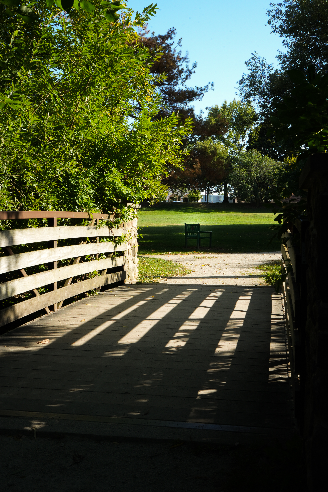

Frontier Park: A Place of Memory and Discovery
Frontier Park has always felt like a quiet heartbeat in my memory—steady, familiar, yet full of things still waiting to be found. I grew up wandering these paths, tracing the same curves and corners that once felt endless. Returning now with a camera in hand, I see it differently. What was once a playground has become a living story—of time, change, and the way places remember us even after we’ve grown past them.

My photo essay begins at the small outdoor amphitheater tucked inside the park. When I was little, it felt enchanted—like the world might pause there, waiting for the next scene to unfold. Now, I see it as the park’s center stage, where nature and imagination meet. It feels like a place built for stories, where laughter, echoes, and rustling leaves share the same rhythm.
Past the amphitheater, the park opens into a wide clearing where the grass stretches and the air feels bigger. It’s the kind of space that reminds me of summer afternoons when time seemed to slow down—when the sky felt like an endless backdrop to laughter and light. Standing here now, it feels quieter, but no less full of life. The openness holds memory like the wind holds warmth.

The bench beneath the tree feels like a quiet memory come to life. When I was younger, benches were just places to sit—to rest, to wait, to eat a snack before running off again. But now they mean something more. They’re pauses in the rhythm, invitations to breathe. Each one feels like a reminder that slowing down is its own kind of movement.

The creek carries a softer kind of memory. I remember leaning over its edge, tossing in stones and watching the ripples race away until they disappeared. It’s the sound I think of most when I picture Frontier Park—steady, alive, always moving. Even now, the creek feels like the park’s pulse, reflecting the light of every season, collecting echoes of every childhood that’s passed through.

As the trail winds away from the water, the creek’s rush fades into a hush. The trees sway softly overhead, and for a moment, everything feels suspended in quiet. Then, the bridges appear—small but strong—stretching over the dips in the earth like open hands. They’ve always felt like thresholds, carrying me from one piece of memory into another.

The bridges are the heart of this journey. When I was a child, crossing them felt like stepping into another world—each side holding its own little secret. Now, they feel like symbols of connection, gently linking past to present, play to reflection, wonder to understanding. Every crossing feels like a quiet promise: that some places will always lead us back to ourselves.
The sunlit path closes this series, though it never truly feels like an ending. The trails here have always felt like gentle invitations—to wander, to wonder, to keep moving forward. The light that spills across the ground feels like memory itself, catching in the dust and leaves, reminding me to be still enough to see it. Every time I walk here, it feels less like leaving and more like returning.

Together, these images form more than a story—they feel like pieces of a place that has shaped me. Frontier Park is built from paths and water and trees, but also from echoes, from moments that linger just long enough to remind me that memory is its own kind of landscape. This park has held my past, and somehow, it keeps teaching me how to be present.